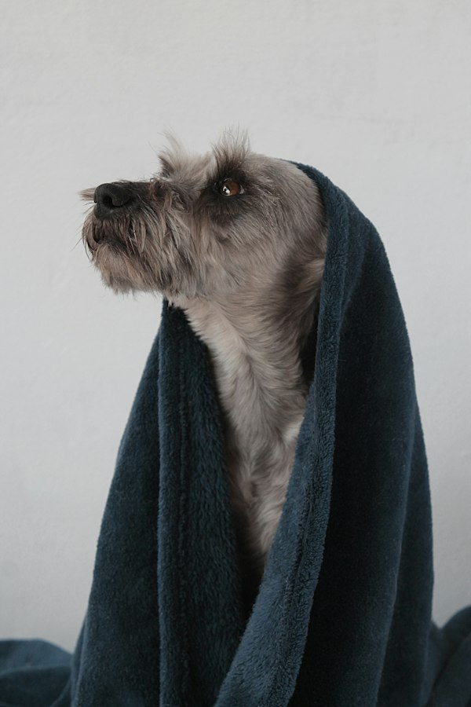
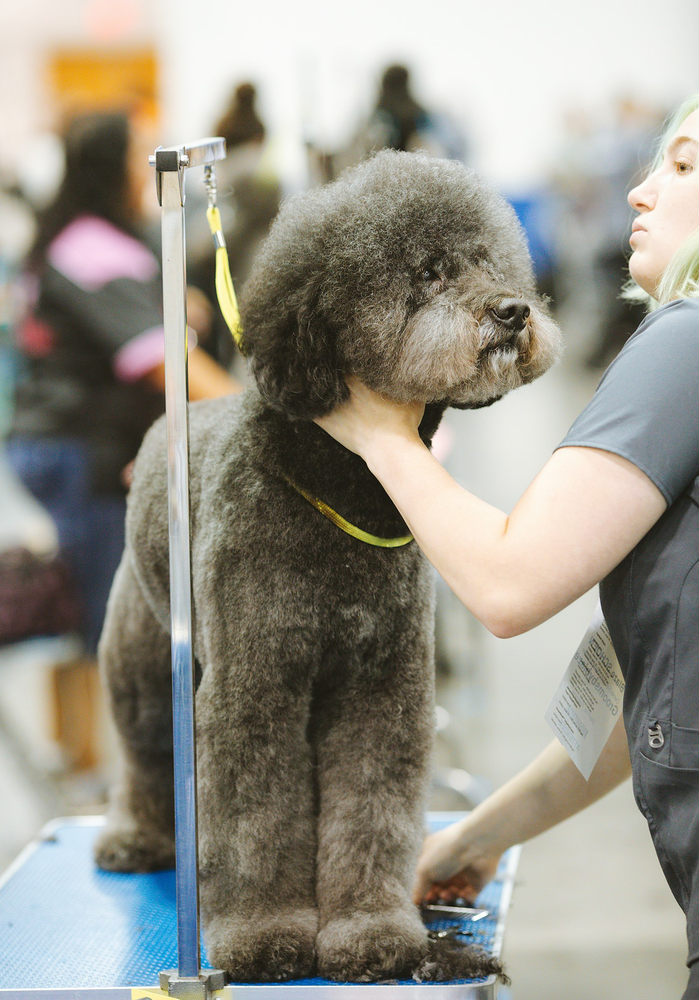

Todo pet do dia num quadro só. E o tutor acompanhando junto.
O Pet Live Pro organiza agenda, atendimentos, leva-e-traz e caixa. Quando o pet entra na sala, a câmera abre no celular do tutor.
Chegou3

Banho · Porte P

Banho · leva-e-traz

Banho e tosa · 15:00
No banho1

Banho + hidratação
AO VIVONa tosa1

Tosa na tesoura
AO VIVOPronto2

Boletim enviado

A caminho · 9 min
AO VIVOTosa na tesoura · com a Carla · há 12 min
Quadro e telas com dados de exemplo
Quando o pet muda de coluna, o tutor fica sabendo.
Pode buscar a partir das 12h40.
Saiu da tosa e foi para “Pronto”? O tutor recebe o aviso no celular, sem você parar para mandar mensagem.
A rota do dia no mapa e o aviso de “a caminho” no app do tutor, até a entrega.
Secador: calma · Tosa: colaborou
Como o pet se comportou no secador e na tosa, junto com a gravação do dia.
Tudo o que acontece no balcão, num lugar só.
O quadro é a parte que o tutor vê. Por trás dele, o petshop inteiro.
Câmera ao vivo por sala
O pet troca de sala e a transmissão vai junto. Cada tutor vê só o próprio pet.
Agora: Banho · CAM 01
Preço por porte
Serviços e adicionais com valor para cada tamanho.
Clubinho
Pacotes recorrentes com saldo de banhos.
Caixa e estoque
Receitas, despesas e vendas de balcão.
Pedidos dos tutores
Agendamentos e reservas de produtos feitos pelo app chegam no painel.
Cada um com seu painel
Da sala de banho ao celular do tutor.
Como a câmera ao vivo funciona no dia a dia do petshop.
- O atendimento começa
No painel, você inicia o atendimento e escolhe a sala. A câmera daquela sala passa a transmitir para aquele pet.
- O tutor assiste
No app MyLivePet, com cerca de 1 segundo de atraso. Só o tutor daquele pet recebe acesso.
- O pet muda de sala
Saiu do banho e foi para a tosa? Troque a sala no atendimento e a transmissão vai junto.
- Terminou, desliga
A câmera para ao finalizar. A gravação fica no app pelo prazo que você escolher e o tutor recebe o boletim.
O que você precisa
- Câmeras Tapo C200 nas salas de banho, tosa e secagem.
- Um computador ligado no petshop, que conecta as câmeras com segurança, sem abrir portas no roteador.
- O tutor assiste pelo navegador do celular e pode instalar o app na tela inicial.
- Termo de uso de imagem (LGPD) no primeiro acesso e gravações apagadas após 7, 15 ou 30 dias.
Sem câmera, o Pet Live Pro funciona do mesmo jeito: agenda, atendimentos, leva-e-traz, Clubinho, estoque e caixa não dependem dela.
Planos para o seu petshop.
Compare os dois planos e comece pelo que faz mais sentido para o seu dia a dia.
Planos e valores em definição.
Dúvidas de balcão.
Preciso de câmera para usar o Pet Live Pro?
Não. Agenda, atendimentos, leva-e-traz, Clubinho, estoque e caixa funcionam sem câmera. A transmissão ao vivo é um recurso a mais, que você liga quando quiser.
Quais câmeras funcionam?
Hoje, a Tapo C200. Ela fica na sala e se conecta por um serviço instalado num computador do próprio petshop, sem abrir portas no roteador.
Outro tutor consegue ver o pet do meu cliente?
Não. Cada tutor recebe acesso apenas ao atendimento do próprio pet, por tempo limitado, e aceita o termo de uso de imagem no primeiro acesso.
Por quanto tempo as gravações ficam guardadas?
Por 7, 15 ou 30 dias, conforme você configurar. Depois disso, elas são apagadas automaticamente.
O tutor precisa baixar um aplicativo?
Não precisa ir à loja de apps. O MyLivePet abre no navegador do celular e pode ser instalado na tela inicial com um toque.
Meus colaboradores usam o mesmo sistema?
Sim. Cada colaborador tem seu próprio acesso, e o entregador do leva-e-traz vê a rota do dia no painel dele.